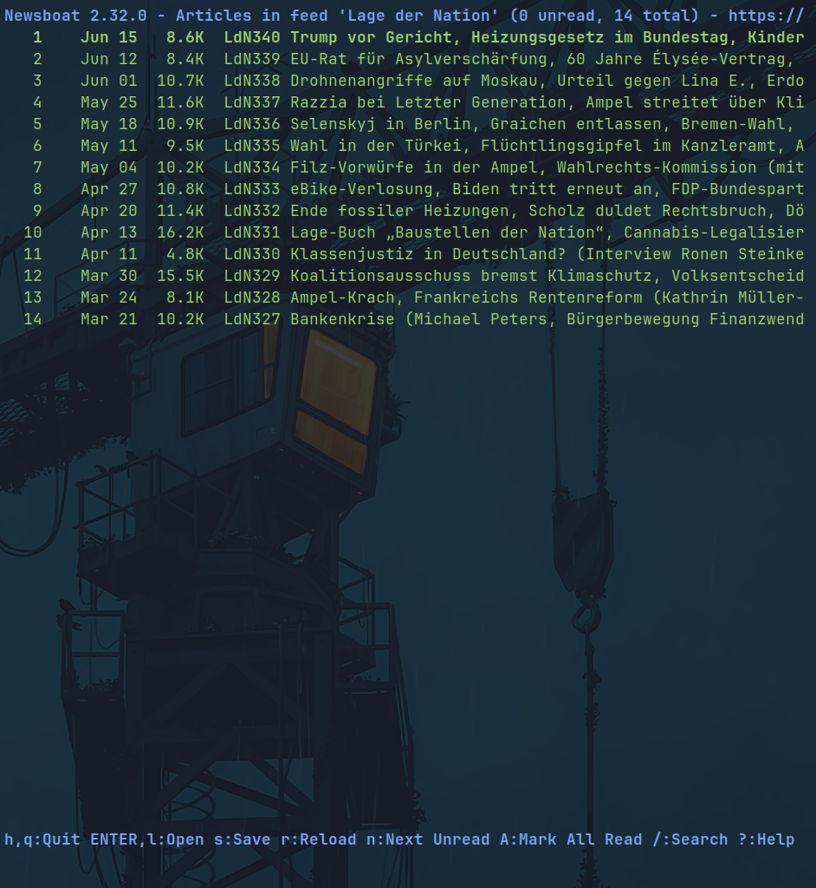
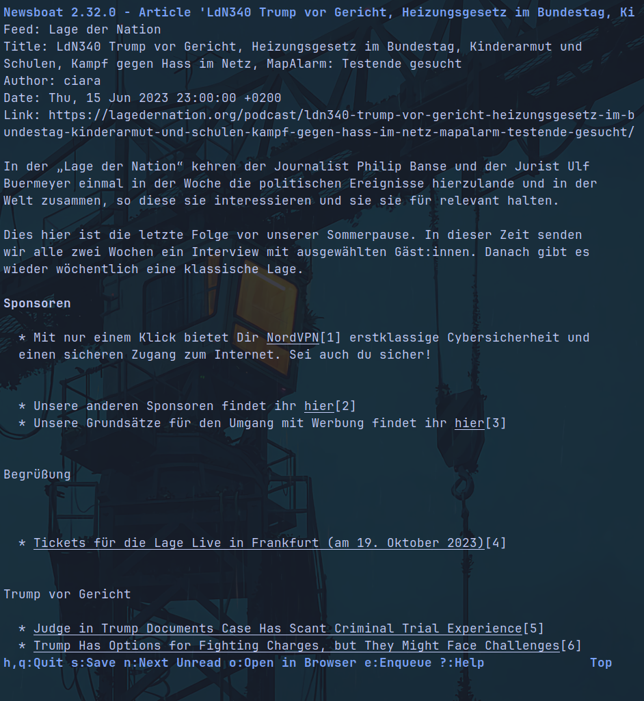

Let me take Instagram as an exmample, I assume it is very similar on other "social-media", you have that concept of a feed, with maybe 50% of what you follow, 25% of algorithmically advertised posts and finally a quarter of ads.
I find that to be a most horrible thing out of multible reasons:
- algorithmically made suggestions are the pure evil to get you to get hooked and watch more ads
- ads are annoying
- you miss out on what you initially opened the app for
- if something is free, mostly you are the product
You probably get the point by now. It is not the aim of this post to discuss the use of social-media, I just had to get something to compare with.
RSS (Really Simple Syndication) is a protocol that is basically the solution. It is around since 1999 and is still around due to just being incredibly good, I often heard about it in tech spaces but it seems to not be in the "mainstream" altough it should.
It works so that you just have a link to a feed which you can "subscribe to" just by adding it to your feed.
e.g. https://www.lagedernation.org/rss

Feed of the link

Content of an entry on the feed
Saves time and figuring around ways to get it into RSS.
Apps to use it
I use newsboat as command line application, it's really minimalistic and just works.On my phone and macbook I have used "NetNewsWire: RSS Reader" before, it also has an account feature so you can sync the feeds across your devices. But due to having had RSS feeds that just spam all the time and having it on the phone I found it to be rather a distraction than a tool, so I got rid of the annoying feeds and the RSS app on the phone.
How to find RSS feeds
The easiest way is to just find an RSS Icon which seems like the following:On most big websites, you can mostly just add "/feed" to the end and get a link that you can input in your reader or open automatically in an RSS app.
If that does not work you can just search for the name of the website and "feed" on your search engine to get a link or even multible for sub topics to choose from.
On youtube you need the following url and just put in the channel_id in the reserved space, you can use a website to get the URL, or get it another way.
https://www.youtube.com/feeds/videos.xml?channel_id=CHANNEL_ID_HERE
Feeds to get started
Personally I have some blogs in there which I enjoy, youtube channels, news portals and podcasts, I also had journals like arxiv-math for some time in there, but then I recollected I am not in academia.Conclusion
In conclusion, I highly recommend it, it just makes life easier and better.Have a nice day.